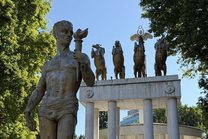
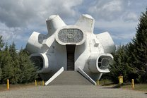
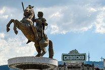

I only decided to pass through Bitola as a stopover to cross the border into Greece, but it turned out to be the most pleasant surprise of my trip. What I found was a gorgeous historic city that looks nothing like the brutalist Skopje: a long cobblestone walking street lined with warm yellow consulate buildings, an Ottoman bazaar with snow-capped mountains in the background and, on the edge of town, the ruins of Heraclea Lyncestis with pristine Roman mosaics.
Bitola is known as the "City of Consuls." In the late 1800s, it was one of the most important cities in the Ottoman Empire and its link to the rest of Europe, with a dozen European consulates and one of the empire's top military academies. It isn't a tourist city, and that's part of the appeal: the main pedestrian street is lined with vibrant cafes full of locals, and the whole place runs at a slow, easy pace. I barely ran into other tourists during my time there. I'd give Bitola one full day, especially if you're crossing into Greece from here. If you decide to add a second day, pair Bitola with Krushevo (my favorite town in the country) or head into the mountains overlooking the city at Pelister National Park.


Getting to Bitola
Bitola is easy to get to as the third-largest city in the country, with hourly buses from Skopje and Ohrid. It's also the closest city to the Greek border: the Medžitlija border crossing is 14 km south, so most people who come here are passing through on their way to or from Greece.
Buses are the way to get around North Macedonia, at $5 to $10 a ride, and the country is small enough that most rides take under 3 hours. Transkop, Bitola's bus company, posts its timetables and sells tickets online, and Balkan Viator lists most routes (though I found it unreliable). It is best to confirm departure times at the station and buy your tickets there. Here are general tips for bus travel:
- From Skopje — buses leave the Skopje bus station about every hour from 4:15 AM to 9 PM, and the ride takes 3 to 4 hours, since Bitola is at the opposite end of the country from the capital
- From Ohrid — direct buses leave the Ohrid bus station about every hour from 6 AM to 8:30 PM, and the ride is about 1.5 hours
- From Krushevo — there are two ways to get to Bitola, both taking about 2 hours: the direct minibus, which runs about every 3 hours from 6:40 AM to 3:20 PM, or a bus to Prilep with a connection there on one of the hourly buses to the Bitola bus station
Crossing into Greece
Long story short... Greece is mad at Macedonia for the name of the country. So much so that Greece blocked the country's path into NATO and the EU until the country changed its name to North Macedonia in 2019. This also makes border crossings infrequent since no buses cross this border.
Given the tensions, I was a bit intimidated by the border crossing, but instead it was a breeze. The best way to cross between the two countries is by booking a taxi or private transfer from Bitola to Florina, the first town on the Greek side. You can easily book one through your accommodation, and expect to pay roughly €40 (about $45). The crossing at Medžitlija was over in a few minutes: they took my fingerprints and didn't even look in the car. The whole ride took just 45 minutes, and the Florina bus station is well connected to destinations all over Greece.
Bitola — The City Itself
All the key sights in Bitola are centered around the main pedestrian street called Širok Sokak. I'd suggest staying in this area, since everything is walkable from there. The city is home to incredible 19th-century neoclassical architecture with warm yellow tones throughout. It feels very different from the brutalist capital of Skopje: slower, more elegant and with a lot more Turkish influence, since there is a large Turkish minority here and some big mosques to go with it. There was something really special about Bitola and its authentic Balkan charm.
Širok Sokak

Širok Sokak (meaning Wide Alley in Macedonian) is the cobblestone walking street at the heart of the city. Almost a kilometer long, it runs from Magnolia Square and the clock tower down to the massive city park.
The street is lined with warm yellow buildings dating back to the late 1800s, when the Ottoman Empire hosted twelve consulates here, among them the great powers of the day: Britain, France, Russia, Austria-Hungary and Italy. Bitola served as the powerful empire's connection with the rest of Europe, and it has been known as the "City of Consuls" ever since.


Today, Širok Sokak serves as the center of social life in Bitola. The whole street is lined with cafes, bars and restaurants which were buzzing even in the middle of a Tuesday afternoon. Macedonia has a strong cafe culture where people sit with friends for hours chatting over a coffee or a beer and a cigarette, and nobody is in a hurry to leave. Stroll down the boulevard and watch the city go about its day. There are also a few key landmarks along the way, including the Catholic Church, the House of the Army and the Monument to the Macedonian Revolutionary Struggle.
Magnolia Square and the Clock Tower


At the north end of Širok Sokak stands an 8.5-meter statue of Philip II of Macedon, the father of Alexander the Great. He founded Heraclea Lyncestis, the ancient predecessor to Bitola, in the 4th century BC. It later grew into a Roman town on the Via Egnatia, the main road across the Balkans. Today, its ruins sit on the far edge of town (more in the Heraclea Lyncestis section below). The statue marks the start of Magnolia Square, which opens out into a green park.
Among the trees in the park stands a 33-meter stone clock tower. Nobody actually knows when the first one went up, but there are mentions of a clock tower here as far back as the 1500s. Legend has it the Ottomans collected 60,000 eggs from the surrounding villages to mix into the mortar.


Right beside the tower is the Yeni Mosque, built in 1558 with a 40-meter minaret and now an art gallery. The final stop in the area is the Dragor River, which runs through the center of town. Its banks are lined with greenery, and a cafe beside the water is a good place for lunch before you cross into the old bazaar.
The Old Bazaar


Past the clock tower is the old bazaar, a sprawling Ottoman quarter. It has been the city's trading center since the 1400s and is still its main market today. In the mid-1800s, when Bitola was the third major city of Ottoman Europe after Istanbul and Thessaloniki, it had over 2,000 shops and some 140 different trades. The covered section of the market alone had 86 shops behind its four iron gates, sold textiles and held the province's treasury. The bazaar also hosts the Isak Mosque, built in 1506. It makes for a great photo with the snow-capped peaks of Pelister behind it.

Today, Bitola is a much smaller city, and the market sells mostly fruit, clothes and shoes. It's there for locals rather than tourists, which is exactly why it's worth the walk: it felt like the bazaar still belonged to the city. There are a ton of small cafes in the old buildings, and stopping at one for a Turkish coffee feels like stepping back in time.
The Ruins of Heraclea Lyncestis


At the far end of town lie the ruins of Heraclea Lyncestis, a city founded by Philip II of Macedon (Alexander the Great's father). The city grew into a bustling Roman town, with a theater built by the emperor Hadrian in the 2nd century AD. The town sat on an important trade route called the Via Egnatia, the main road across the Balkans, which connected Europe and Asia at the time.
I'm not usually a fan of ancient ruins, but this one is definitely worth making time for. The complex is fairly large, complete with basilicas, a bathhouse, a heavily restored theater and a small museum. The most impressive part was the massive floor mosaics in the basilicas, especially the one in the entrance hall of the Great Basilica, which covers more than 100 square meters. They were mostly intact, depicting peacocks, lions, birds and trees.

Entry is 180 denars (about $3), cash only, and it takes about half an hour to see the entire complex. There were only two other tourists there while I was visiting, which is what I loved about North Macedonia: every site felt unexplored, and you had it pretty much all to yourself.


To get there, you can take a 30-minute walk from downtown. The route runs the full length of Bitola City Park, a huge green park with a few statues and a playground, then through a few run-down streets on the edge of town, past an abandoned factory and the cemetery, before the ruins appear. It isn't a particularly scenic walk, but it was good to see the side of Bitola that wasn't just the restored city center. If you're done walking, a taxi back into town is a mere 120 denars (about $2)!


NI Institute and Museum Bitola


At the end of the walking street is the NI Institute and Museum Bitola, housed in the former Ottoman barracks. It once served as one of the most prestigious military academies in the Ottoman Empire. In fact, Atatürk, the founder and national hero of modern Türkiye, went to the military school here. A whole wing of the museum is dedicated to him, and it gets a steady stream of Turkish visitors, so many that the woman selling tickets started speaking Turkish to me and said they only ever get Turkish tourists in Bitola.


The museum also covers the rest of Bitola's history, from art and traditional clothing to a courtyard of Roman statues. It's worth an hour (180 denars, about $3) if you're interested in Ottoman history.
Day Trips from Bitola
Bitola is well placed as a base for the south of North Macedonia. It's the largest city in the region and has regular bus connections to anywhere you'd want to go. Here are three day trips worth taking.
Krushevo


Krushevo is a small, picturesque town deep in the mountains of North Macedonia. It's the perfect place to get a taste of small-town Macedonian life, where neighbors still stop to chat on the main square and the slow pace hasn't changed in generations. Explore the traditional Macedonian architecture: white houses with red roofs and intricate woodwork. Old cars from the Yugoslav days, most of them Zastavas, are still parked along the steep lanes. The town is also home to a space-age monument from 1974 called the Makedonium, sitting in sharp contrast to the historic town below. It ended up being my favorite place in North Macedonia.


Technically, Krushevo is doable as a long day trip from Bitola, but it would require proper planning. I would suggest spending at least one night in Krushevo to experience the gorgeous sunset (in my opinion, the best in Macedonia) and a hike through the surrounding pine forest.
Pelister National Park

The snow-capped peaks you see behind the mosques in the old bazaar belong to Pelister National Park, widely considered to be the best national park in the country. I didn't have time to visit on my last trip, but it's the first thing I want to do the next time I'm in North Macedonia. I had some friends who went and absolutely loved the hikes.
The classic hike is to Golemo Ezero (Big Lake), the larger of the two glacial lakes known as Pelister's Eyes. The hike is 12 km round trip and starts from the village of Nižepole. It takes about 6 to 7 hours with 1,050 meters of climbing, through pine forests and wild blueberry fields up to the lake. Pelister Guides leads it as a guided day hike, and My Macedonia Blog has an article mapping out the park's other trails.
Prilep


Prilep is North Macedonia's fourth-largest city, and to be honest, I would only stop there if you're passing through for a bus transfer. If you do find yourself there, the medieval fortress of Markovi Kuli above town and the old bazaar are enough for a few hours, and in mid-July the city hosts Pivofest, a four-day beer festival.
Where to Eat
Bitola was the cheapest place I went to in North Macedonia, and the food was no exception. I was busy sightseeing during my short time in Bitola, so I didn't get to fully explore its food scene. For more on Macedonian cuisine and the dishes to try, see the food section of my North Macedonia itinerary.
-
Sip a Turkish coffee in the old bazaar — a quintessential Balkan experience that you shouldn't miss while you're in Macedonia. The country has a strong cafe culture of spending hours lounging at a cafe with friends to pass the time.
- I decided to stop by Dembel Čaršija in the old bazaar. It was a random cafe full of old men drinking beer at 11 AM, and the coffee was amazing. Any of the cafes will do, and it's the best way to experience the relaxed pace of life in Bitola.

- Donerium — for a quick snack, stop by Donerium. It's a cheap little shop on the main walking street where you can get a meal for just a few dollars. The woman behind the counter was very helpful and even suggested some activities for me.
Where to Stay

Stay central, within a few blocks of Širok Sokak, so you can walk to everything in this guide. Accommodation in Bitola is very affordable. I rented an entire Airbnb apartment for about $30 a night. The host also helped arrange my transfer to Florina the next morning.
Explore More


